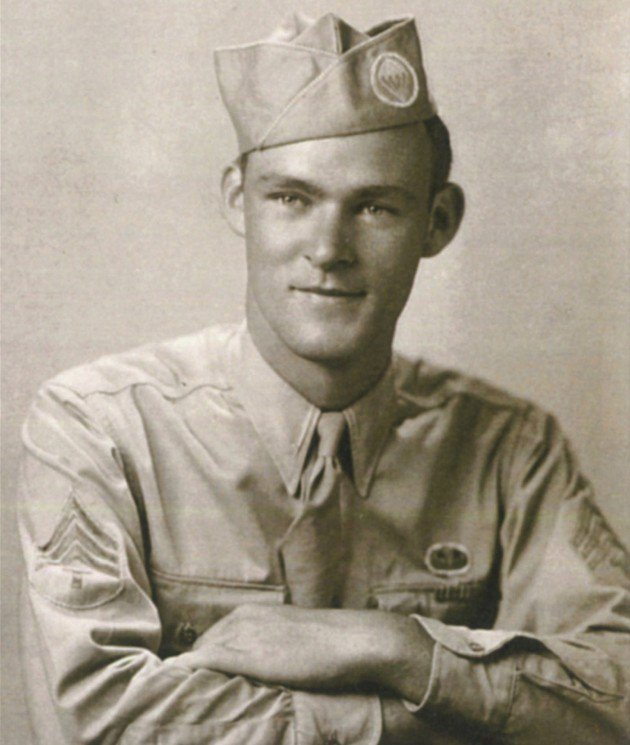
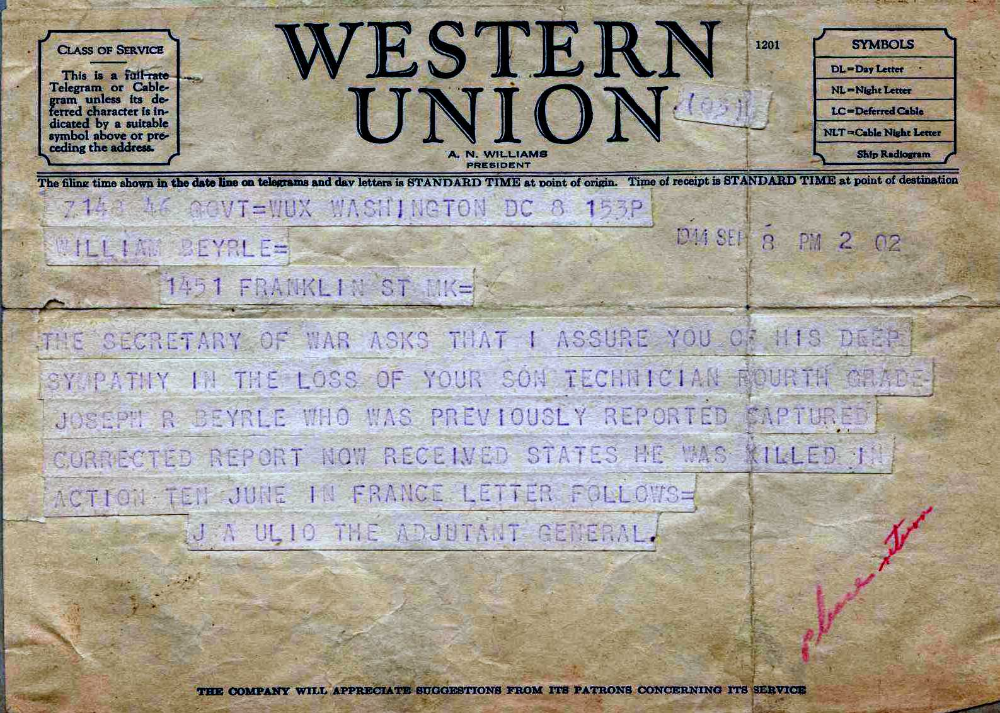
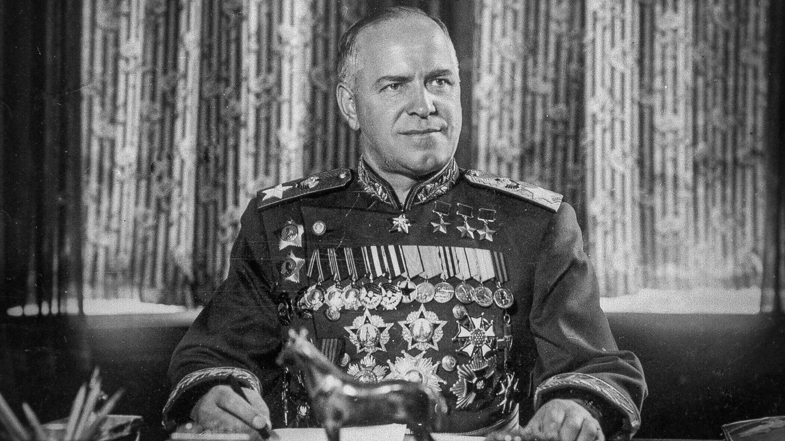

Joseph Byerly rođen je u Michiganu 1923. Grewing. Živio je u kući s bakom i djedom koji su bili izravni imigranti iz Bavarske.
Odrastajući s njemačkim i engleskim govornicima u svom domaćinstvu. Još u srednjoj školi kad je napadnut Pearl Harbor, vrlo atletski Byerly
odbio je stipendiju za igranje košarke u Notre Dame i pridružio se 101st Airborne Division
ovdje pod nadimkom Jumpin Joe. Na treningu se specijalizirao za stručnjaka za miniranje nakon što je stigao u Englesku nakon što mu je trening završio bio je odabran
je za nekoliko dobrovoljačkih skokova. U svibnju i travnju 1944. on je prikriveno skakao u okupiranu Francusku isporučivši 250 000 dolara zlata Francuskom Otporu kao
financiranje od saveznika. Nakon što se oba puta vratio na sigurno, njegov prvi veliki borbeni skok bio je sa 101st Airborne Division tijekom Operacije Overlord.
|

|
|
Beyrle u Ramsbury, 1943
|
Jedan od najvećih problema za padobrance u ovoj operaciji ipak bili su vatra iz FLAK topova, avioni koji su ih odbacivali su
išli prebrzo, a ponekad presporo i kada su svi iskakali svi su bili razasuti po cijelim zonama skakanja daleko od mjesta na kojem bi trebali biti.
Joe je morao iskočiti iz svog aviona izuzetno nisko na oko 400 metara i sletjeti na vrh crkve u Saint Countu Dumont i uspio je skliznuti
sa strane krova na groblje i pod njemačkom vatrom pobjegao u noć. Nakon toga uspio je dignuti u zrak njemačku električna centrala i dok je hodao prema njegov
cilj od dva mosta prema kojima je trebala ići njegova jedinica. Uvukao se u redove živice u njemačko mitraljesko gnijezdo i odmah je bio zarobljen te
tako započinje jedno od najnevjerojatnijih ratnih zarobljeničkih priča. Nakon što je uhvaćen, njegove su oznake uzete i dane njemačkom vojniku
koji će se u američkoj odori pokušati pomiješati s američkim trupama ali nije uspio rezultirajući time da su američki vojnici pronašli njegove oznake i stavili
ga na popis mrtvih.
|

|
|
Telegram američkog Ratnog ministarstva poslan Beyrleovoj obitelji, pogrešno im govori o njegovoj smrti, rujan 1944. godine
|
Nakon svog prvog zarobljavanja prebačen je s ostalim ratnim zarobljenicima u područje za zadržavanje u KarenTtan gdje je i bio dobio
manju ranu od savezničkog topništva. U kaosu zatvorenici su se odvojili od čuvara, a kako se njemačka patrola
vratila po vojnike, on i nekolicina vojnika su pobjegli, lutajući pokrajinom Normandijom nekoliko sati tražeći prijateljske
trupe dok ih ponovno nisu zarobili. Zatim je poslan u Saint-lo gdje je preživio još jedan saveznički napad ovaj put od bombardera prije
nego što je odveden u samostan i ozbiljno ispitivan o svom njemačkom nasljeđu i zašto se borio s Amerikancima. O incidentu on rekao:
" Ispitivan sam 20 do 24 sata dnevno, pitali su me sva uobičajena pitanja zašto se ja kao Nijemac borim za Židove Roosevelta
i Morgenthaua protiv svojih, tijekom ispitivanja nazvao sam njemačkog časnika glupanom i probudio se nekoliko dana kasnije u bolnici
s velikom glavoboljom i krvavom glavom, a kasnije sam odveden natrag u samostan". Nakon toga je smješten na prisilni rad na popravljanju
željezničkih pruga oko sjeverne Francuske, a redovito je morao izbjegavati još prijateljskije napade bombardera. Nakon toga krenuo je prema
istoku kroz Francusku završivši u skladištu izvan Pariza i na kraju u Stalagu 11a u Lindberghu u Njemačkoj, gdje je napokon mogao pisati
kući na iznenađenje svoje obitelji koja je rekao da je mrtav i da je registriran kao ratni zarobljenik.
|
Njemački zapis s Beyrleinim podacima kao ratnim zarobljenikom
|
Nakon toga krenuo je prema istoku prema Stalagu 3 C, onakav kakav je bio Joe nije uspio odsjediti ostatak rata i brzo pokušao smisliti
načine za bijeg. Njegov prvi pokušaj bijega s još dvojicom ratnih zarobljenika imena Breuer i Quinn su izveli podmićivanjem njemačkih stražara
uz osiguranje, cigarete koje im je davao Crveni križ i ukrcali su se na vlak koji je krenuo prema Poljskoj gdje bi se sastali ili s Crvenom armijom ili s Poljskim
pokretom otpora. Njihove nade ipak su brzo propale je kad je vlak stao shvatili su da su se ukrcali na jednosmjerni vlak za Berlin. Ubrzo ih
je pronašao Gestapo. Gestapo ih je mučio i ispitivao sljedeći tjedan, nakon ispitivanja odlučeno je da će biti strijeljani kao špijuni, no prije nego što se to
dogodilo, vojska ih je proglasila ratnim zarobljenicima još jednom. Poslani su natrag u Stalag 3c, međutim, po povratku
su na krijumčarenom radiju čuli kako su Sovjeti probili kroz Armijsku grupu centar, a to je bilo prilično
blizu kampu gdje su ih držali zaista samo nekoliko dana pješice, pa je trio ponovno pokušao pobjeći. Ovaj put, sakrivajući se u prazne
posude s hranom, napuštajući kamp, međutim nedaleko od izlaza kolica ili na čemu su već bila su se prevrnula pa su krenuli trčati, samo je Berly ostao živ,
krećući se prema ruskim linijama. Nakon malo šetnje Naišao u rusku tenkovsku jedinicu gdje se umjesto kao indetificirao kao Amerikanac umjesto da zatraži
da ga odvedu u pozadinu i pokušaju pokušao doći do Američke ambasade nakon dugog mučnog putovanja, pitao je da li bi se mogao boriti zajedno s njima, prvi ruski časnik kojega je zamolio
i rekao je ne njegovom zahtjevu, već po odlasku do zapovjednika bataljuna koji je zapravo bio prilično poznata Aleksandra Samusenko jedina žena zapovjednica tenka Prve gardijske
tenkovske vojske koja je postala poznata po svojim djelima u Kursku. Njegov je zahtjev uslišen i mogao se boriti uz njih.
Joe se s njima borio otprilike mjesec dana, dobro iskoristivši svoju ekspertizu za miniranje i oslobodio svoj prethodni logor zarobljenika Stalag 3c, a u procesu je kasnije
ranjen i odveden u sovjetsku poljsku bolnicu. Gdje ga je posjetio nitko drugi nego feldmaršal Žukov nakon što je čuo čudnu priču o Amerikancu koji se borio u njegovoj vojsci nakon
što je ispričao svoju priču Žukovu preko prevoditelja, naredio mu je da ga odvezu u Moskvu kako bi došao do Američkog veleposlanstva i sljedećeg dana jedan od njegovih policajaca dao mu je papir i rekao mu je
da ne trebate znati što piše, ali odvest će vas kamo trebate ići.
|

|
|
Georgij Konstantinovič Žukov
|
Pronašao je put natrag do Američkog veleposlanstva ali za njega je bilo još nekoliko pitanja, iako kao kad je stigao u Ameriičko veleposlanstvo i Amerikanci i Sovjeti bili su sumnjičavi prema
njemu jer je prema njihovim zapisima Joe Byerly bio mrtav otkako su njegove oznake pronađene u Normandiji i bio je pod stražom sve dok se otiscima prstiju nije mogao provjeriti
njegov identitet iz straha da će biti špijun ili nešto slično. Joe se vratio kući u travnju 1945. i mogao je provesti VE dan sa svojom obitelji kad se vratio kući otkrio je da su
mu u gradu pružili kompletni pogreb jer su zaključili da je mrtav. Kasnije će ga vjenčati isti svećenikom koji mu je držao pogreb u istoj crkvi u kojoj je bio i njegov sprovod. Joe
je ostao aktivan u veteranskim organizacijama tijekom cijelog života i prepoznali su i predsjednik Clinton i predsjednik Jeljcin 1994. godine na 50. godišnjici iskrcavanja Dana D.